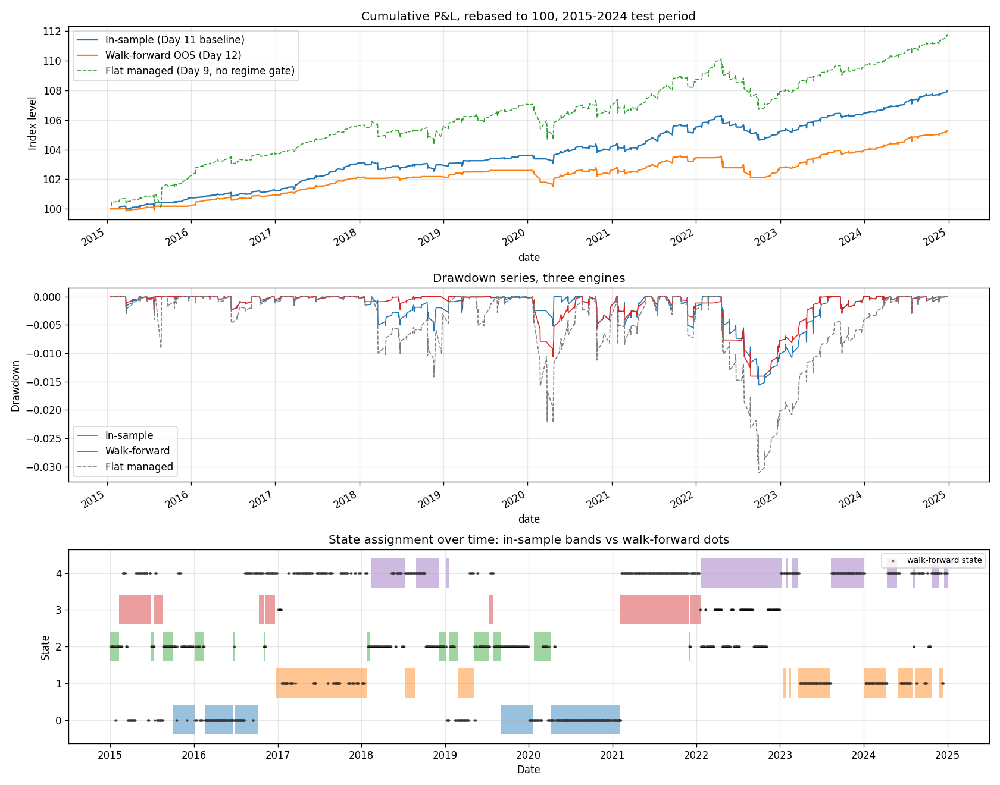

I'm Bach, an MSc student in Risk Management and Financial Engineering at Imperial College London. I build trading strategies, test them carefully, and write up what I actually find, including the ones that did not work.
How every project is tested
pre-registered thresholds
deflated sharpe ratio
newey-west HAC t-stats
purged k-fold with embargo
capacity analysis
honest negative results
Cross-Asset Volatility Risk Premium strategy
1.75OOS Sharpe
−1.4%Max drawdown
→ 1.0Deflated Sharpe
3.04NW t-stat
These figures are from the Cross-Asset Volatility Risk Premium strategy. The one that was marginal and the one that failed are further down, with the numbers that failed them.
If you test enough strategies, one of them will look good purely by chance. The Deflated Sharpe ratio adjusts for how many you tried. Drag the sliders to see how many backtests it takes before pure noise would beat a given Sharpe.
The multiple testing correctiondrag the sliders
1.75 is the VRP strategy's walk forward out of sample Sharpe.
More backtests means a higher bar for a real result. 420 is the VRP trial count.
Observed Sharpe1.75
Noise threshold1.34
CLEARS
At an observed Sharpe of 1.75 with 420 backtests, the noise threshold is 1.34. It clears by 0.41.
This is a simplified illustration. The threshold is the expected best Sharpe from N independent trials under the null of no skill, assuming about five years of daily returns. Each strategy's actual Deflated Sharpe is computed properly in its methodology PDF.
Method
Monte Carlo simulation
Simulating many possible price paths to see the whole distribution of outcomes, rather than a single point guess. Adjust the inputs, or reseed.
Monte Carlo chart: 200 simulated geometric Brownian motion price paths fan out from a common starting value of 100 over one year at 30 percent annual volatility, with a histogram of their final values showing most outcomes near the start and a long right tail.
An illustrative Monte Carlo simulation of geometric Brownian motion. This is a demonstration of the method, the same family of simulation behind the option pricing and capacity analysis in my projects. It is not a forecast or a result.
Research
Four projects. A paper, a strategy that worked, one that was marginal, one that was not.
A working paper on contamination in LLM equity signals, then volatility, trend and cross sectional strategies. Every one was tested the same way, and the ones that failed are here with the numbers that failed them.
Look-Ahead Contamination in LLM Equity Signals
SSRN working paper
An LLM asked to rank stocks on a past date might be forecasting, or it might be remembering. Inside its training window those two look identical. I measured the difference in the units a desk actually reads, a Sharpe ratio, and built two detectors that need no realised returns at all, so a vendor's stated cutoff becomes something you can check rather than something you take on trust.
The same months, read two ways (real)
inside training windowboundary located from responses, 2022-12vendor's documented cutoff, 2023-12
Two stacked charts over the same 2021 to 2026 monthly axis for Llama 3.3 70B. The upper chart is the cross sectional information coefficient scored against realised returns, which is mostly positive before 2023 and scatters around zero after. The lower chart is month to month repetition in the model's own answers, needing no returns, which is noisy and near zero before 2023 and then jumps to a flat plateau around plus 0.41. Both turn at the same point, roughly a year before the vendor's documented cutoff. A six month gap in the middle is the buffer window, which was never queried.
IC in window+0.166
IC out−0.019
Sharpe in / out2.14 / 0.40
Re-pairing null p 0.003
Boundary located1 yr early
CaveatOne subject carries the full contrast, so this is a protocol and a demonstration, not a claim about language models as a class. The sharpest version of the effect, measured inside a single behavioural segment, sits at p 0.059 and does not clear five percent. The provider retired the model mid project, so its cached responses are now the only record and no part of the result can be re-run against the vendor.
I harvest the volatility risk premium by selling SPX iron condors, with position sizing driven by a 5 state Gaussian HMM regime model. Options are priced with Black-Scholes using VIX as the implied vol, and everything is validated walk forward, out of sample.

Walk-forward out-of-sample equity, drawdown and regime state. Source: cross-asset-vrp/results/figures/walk_forward.png
OOS Sharpe1.75
Max DD−1.4%
Deflated Sharpe → 1.0
NW t (lag 21) 3.04
Capacity £0.5–1M
CaveatThe capacity ceiling is about £0.5 to 1M, so this is an edge at small capital, not an institutional product. The backtest uses VIX as the implied vol, which understates the real spread you would pay trading live condors.
Multi horizon time series momentum and carry across 25 ETFs, with a 3 state HMM regime gate. I trained walk forward on 2007 to 2023 and kept 2024 to 2026 as a true holdout that I did not touch until the end. In sample the result is weak after deflation, but it passed the pre registered out of sample test, and the crisis alpha pattern is clean.
Crisis-window return (real, 6 of 6 positive)
Crisis-window returns: GFC 2008 plus 38.16 percent, Inflation 2022 first half plus 23.26 percent, COVID 2020 plus 14.54 percent, Vol spike 2018 plus 13.15 percent, UK gilt 2022 plus 4.80 percent, Eurozone 2011 plus 2.26 percent.
Capacity — drag to set assets under management
$1.0M+0.139net Sharpe contribution
Measured points: $1M gives +0.139, $10M gives −0.031, $100M gives −0.412. The line between them follows a square root market impact model. Past roughly $10M the edge is gone.
In-sample Sharpe 0.485
OOS Sharpe0.876
Crisis windows+6/6
Capacity $1–10M
CaveatThe in sample Sharpe of 0.485 does not pass the Deflated Sharpe test at the full trial count, and the Hansen SPA p value is 0.083. The 2.3 year holdout is short and could be driven by one or two events, so I report the 0.876 without overselling it.
A cross sectional model on 28 ETFs that combines a graph layer, the Laplacian eigenspectrum, with alternative data: FinBERT sentiment on 8-K filings, plus Bluesky and StockTwits text. The signal did not survive multiple testing correction or trading costs, and I report it that way.
Information coefficient by year (real)
Information coefficient by year: 2018 plus 0.028, 2019 minus 0.074, 2020 minus 0.005, 2021 minus 0.095, 2022 plus 0.032, 2023 minus 0.113, 2024 minus 0.074, 2025 minus 0.051, 2026 plus 0.065. Most years are negative.
Peak IC (3d) +0.016
Deflated Sharpe 0.38
8-K signal t−3.16
Verdict null
CaveatI did find a contrarian 8-K sentiment signal (IC −0.04, t −3.16), with the opposite sign to the published literature, and a shift in retail sentiment after 2022 that the aggregate number hides. The Congressional trading layer was a clean null. For me the interesting part was in what failed.
The 5 state hidden Markov model that sizes my volatility book, labelled by its average VIX. The band is drawn from the real saved state series; it begins in 2010 where that series starts.
This is the regime signal my volatility and trend strategies size positions from.
Volatility
Implied volatility surface
Implied volatility is not a single number. It varies by strike and by maturity, forming a surface. Drag to orbit the view.
vol ↑ moneyness → maturity ↘
drag to orbit
An illustrative implied volatility surface, the volatility smile across strikes and maturities. This is the kind of object my volatility risk premium strategy works with. The surface shown is representative, not live market data.
Timeline
How the work was built
A self directed build. I finished each project and locked its result before starting the next.
Days 1–28 · VRP iron condorVolatility risk premium
Data pipeline, the condor backtest engine, the 5 state HMM and regime sizing. A cross asset extension that did not work, kept in as a documented negative result. Full DSR, Newey-West, and capacity checks.
Days 29–49 · Alt-data stat arbCross sectional signals
FinBERT on 8-K filings, about 560k Bluesky posts, StockTwits, the graph layer, purged k fold. Shipped as a null, with one real contrarian 8-K finding.
Days 50–84 · Multi-asset trendTrend and carry
Trend and carry, regime gate, tail hedge, a true out of sample holdout, Hansen SPA, block bootstrap. It passed the pre registered out of sample test. In sample was weak and I say so.
Jun–Sep 2026 · LLM contaminationFrom strategy to method
A different kind of problem: not whether a signal works, but whether you can trust the test. Cross sectional scoring of a recall probe, a dollar neutral translation into Sharpe terms, two detectors that need no realised outcomes, and a reproduction gate that fails the build if any published number stops following from the code. Written up as a working paper.
NowCombining the strategies
Combining the three strategies under risk parity and building the live execution layer, as an engineering exercise rather than an alpha claim.
multi-asset-trend — checks
$ pytest -q
243 passed in 41.2s
$ mypy --strict src/
Success: no issues found$ gh run list --limit 1
completed success CI main
# SEED=42 everywhere · n_jobs=1 · no bfill · type hints throughout
Toolkit
Skills
Languages
Python
R
C++
SQL
Machine learning & NLP
scikit-learn
XGBoost
FinBERT sentiment on filings
Quantitative methods
time series econometrics
hidden Markov regime models
derivatives pricing (Black-Scholes)
Monte Carlo simulation
factor models
Statistical validation
Deflated Sharpe ratio
purged k-fold with embargo
Newey-West HAC
Hansen SPA
block bootstrap
walk forward out of sample design
Tools & infrastructure
Git
GitHub Actions CI
pytest
mypy (strict)
yfinance
FRED API
Background
About me
I moved from Vietnam to London to study Risk Management and Financial Engineering at Imperial College. I wanted to find out something simple. Working on my own, with free data, could I do systematic research that holds up to the standard at the top firms.
The projects above are my answer. They are not about one lucky backtest. I set the thresholds before I ran anything, tested honestly, and reported the result even when I did not like it. One strategy worked at small scale, one came out marginal, one was a null. I think that mix is the most honest thing here.
Away from the screen, I am competitive. In the IMC Prosperity global trading competition I finished 313th out of 18,803 teams. I box, I snowboard, and I am still working on my golf swing.
EducationMSc RMFE, Imperial College London (2025)
BasedLondon, UK
CompetitionIMC Prosperity, 313 / 18,803 teams
LanguagesEnglish and Vietnamese fluent, Japanese basic
Contact
Get in touch
I'm looking for systematic researcher and quant roles in London. The quickest way to judge me is to read the code.